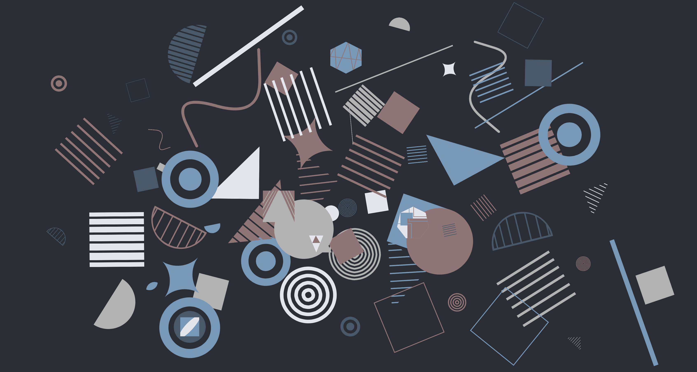
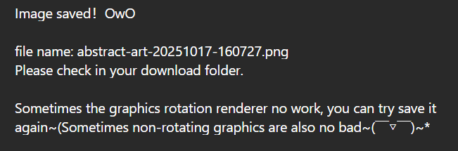

◈ Reflection
I've always had a strong interest in abstract painting, so for this audio-based system, I sought to use randomness as the underlying logic of the entire UI. I wanted this to be more than just a visual presentation, but an interactive artistic experience—one that allows users to "create" abstract paintings. Real-life abstract art is often dismissed as "beautiful but illogical," which inspired me to realize that randomness and disorder aren't flaws; as long as the imagery is aesthetically pleasing and the rhythm is appropriate, logic isn't necessary. Therefore, I prioritized both aesthetics and randomness over visuals.
In terms of information design and interaction mapping, I wanted the entire screen to become the canvas for abstract art. Even with the addition of a control panel, it wouldn't interfere with the user's creative experience. This design embodies the efficiency I emphasize: simplicity, directness, and unobstructedness. Upon entering the page, users can tap the screen to generate random shapes and accompanying musical scales, providing an immediate visual and auditory response.
This efficiency also enhances the system's learnability. Based on user testing feedback, I added prompts upon entering the page, but I believe the overall interaction logic remains extremely intuitive, requiring little learning curve. Users grasp the "click to create" principle within seconds. This instant feedback allows the system to maintain an efficient rhythm and imbues the "randomly generated" abstract paintings with a greater fluidity.
During the design process, I also reflected on a key issue: how to maintain sufficient interest within a minimalist interface. To avoid visual monotony, I later incorporated a multi-layered randomization algorithm, allowing the generated shapes to vary in size and rotation, allowing users to perceive differences in rhythm and layering.
Expressivity is also a design value I value highly. Although users cannot directly select shapes or colors, every click, every generated shape, and every rhythmic change contributes to a unique image. Each result is unique, allowing users to experience the meaning of "participating in the creation."
In the initial version, the triggering of the musical scale was also random. However, after user testing, I received a suggestion that if the musical scale could change with the position of the image (for example, with decreasing pitch from top to bottom), the auditory hierarchy would be more natural. After importing the assets, I realized that the randomness of the graphics themselves was already rich enough, but if the sounds remained completely random, the overall effect would be chaotic. Therefore, I changed the scale to an ordered mapping from top to bottom (high notes at the top, low notes at the bottom).
I think this was a successful change—it maintained the visual randomness while giving the sounds a sense of order, allowing users to focus more on the visual generation process.
In the initial prototype, I designed three draggable buttons that were solely used to generate sounds upon collision. But after officially importing the graphic materials, I decided to make these "fixed graphics" part of the picture, and the collision sound mechanism was transformed from the main gameplay to a hidden "easter egg". However, to ensure that users could still discover it, I still included a description of it on the onboarding screen.


When it comes to time management, my pace isn't ideal. Without a clear direction early on, I spent a lot of time on inspiration, and only settled on a theme after combining the concepts of "randomness" and "abstract painting." This led to a rather tight schedule during the prototyping process, and I even forgot to include the onboarding screen, which was supposed to exist.
In the early prototype, I focused primarily on implementing the core logic for generating graphics and sounds on clicks, which was the most important part of the project. In the middle phase, I imported the assets and modified the scale logic, which went more smoothly than expected. Later, I gradually added control panels for features like sound on/off, undo, and screen clearing.
However, when debugging the image saving feature, I was unfamiliar with GitHub and Netlify's automatic deployment mechanisms, and wasted considerable time repeatedly testing in the wrong local environment.
This experience made me realize that time management isn't just about allocating tasks; it also involves understanding and planning the production process.
There were also moments during this development process that I found particularly satisfying. For example, the addition of the "Undo" function was a natural extension of inspiration.
Recalling my frequent use of the "Undo" function in digital painting, I incorporated it into the system, allowing users to fine-tune their generated results just like painting. Since there is "undo", there should naturally be "save", so I implemented the image screenshot and save functions. Although the screenshot renderer occasionally encountered errors due to rotation or cross-domain image processing, the overall result was still satisfactory.
←Unwork
←Work 
Seeing users save their generated abstract artworks made me feel that the project had truly completed a "creative closed loop."
After essentially completing the control panel, I wanted it to collapse so the user could see the entire screen. This wasn't logically complex, but because I initially forgot to embed the existing logic within the code structure, I struggled for a long time during debugging.
Additionally, some code conflicts cost me extra time. For example, when I added a random color function to the background, I discovered that the existing script had overwritten the style, rendering the change ineffective. The navigation dialog upon entering the page also failed for the same reason. Ultimately, after repeated testing and troubleshooting, I fixed these conflicts.
Although the process was tedious, seeing the final page run smoothly was a great sense of accomplishment.
All in all, this was a fun project to work on, and it deepened my understanding of the interaction between project design code.
◈ References
- Kandinsky.W. 1923 Composition 8 [oil on canvas], 140 × 201 cm, New York: Solomon R. Guggenheim Museum.
- Production Type, 2021, Newsreader, variable font. Available at: https://fonts.google.com/specimen/Newsreader
- OpenAI, 2025, ChatGPT (GPT-5 model), large language model, used to support reflection writing and some code production. Available at: https://chat.openai.com/